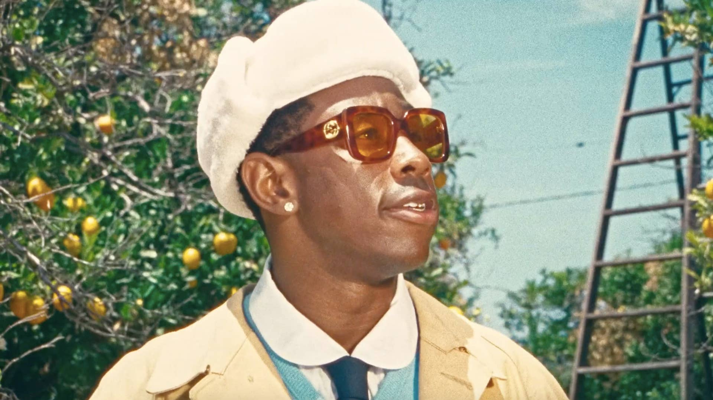

Why He Is The Most Influential
Tyler, The Creator, is the most influencial artist.
As of the last 10 years there has been no artist to be as influential as Tyler, The Creator. His music throughout the years has shaken up the industry album after album. From Goblin’s dark gritty lyrics to Call Me If You Get Lost’s buttery fusion of rap, soul, and other genres. Tyler has proven that he can do it all. He constantly talks about not being influenced by what others think and do what you love and he is and always has been true to those words. Where other artists let their audience dictate their music and products, Tyler does what he wants and loves. That is influential. This man sits on his albums, singles, and products until HE wants to drop them and when he does he goes all in. He has built an almost cult following with his no-BS attitude and his hyper yet easygoing personality. He influences people to do what they love and try everything and constantly says, “If you end up hating it, oh well. It’s not like you’re married to it”. Those are words I live by. Those words influence me. He is the reason no matter how bad things are around me I don’t sweat it, because I learned from him that people are gonna do their own thing and things are gonna happen. That’s why I only stress about things I can change.
I know im kind of gushing but what did you expect, Im making a whole website based on the guy. He constantly destroys the competition, when DJ Khaled had his album, Father of Asahd, dethroned by IGOR, Khaled went wild. Khaled had everyone on his album from Cardi B, to 21Savage, to Chris Brown, to Lil Wayne, SZA, Post Malone, Meek Mill, Lil Baby, Nipsey, Future, and Beyonce. THOSE ARENT EVEN ALL THE TOP ARTISTS. Khaled still got blown out of the water. Then Khaled took to social media instantly and started taking shots at Tyler and you know what Tyler did, he let that number 1 speak. He went and continued his shows. He burnt Khaled's whole identity of being the best, being number 1. That's influential to see the weird dude essentially beat all the big players in the game. In conclusion he is the most influential because he is actually himself and is real, there is no facade and no BS, period. I strive to be like him one day where I no longer care what others say and do what I love. Now go listen to some bangers.